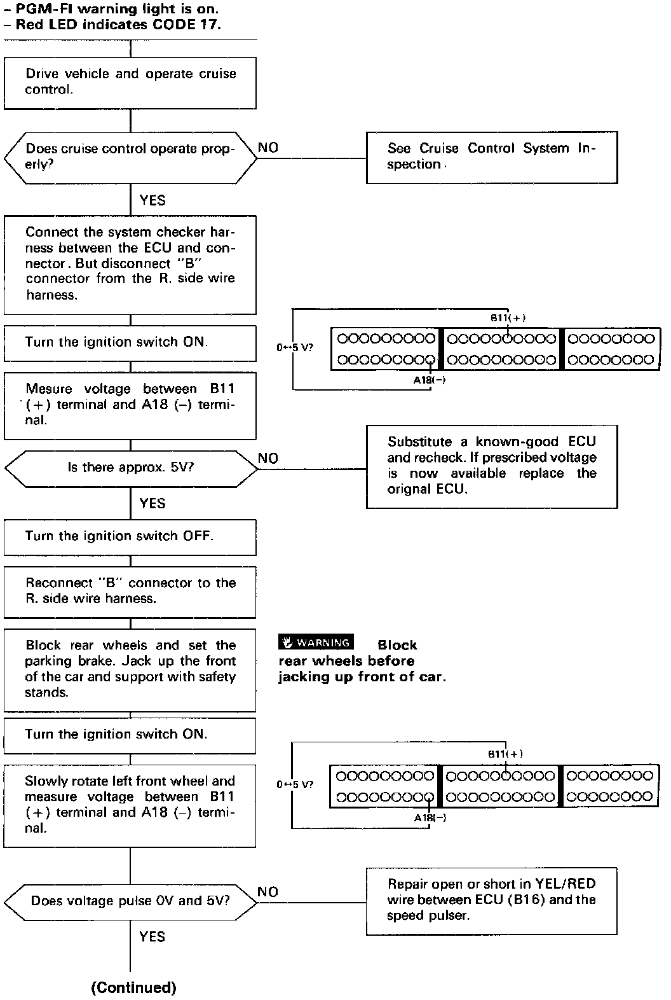
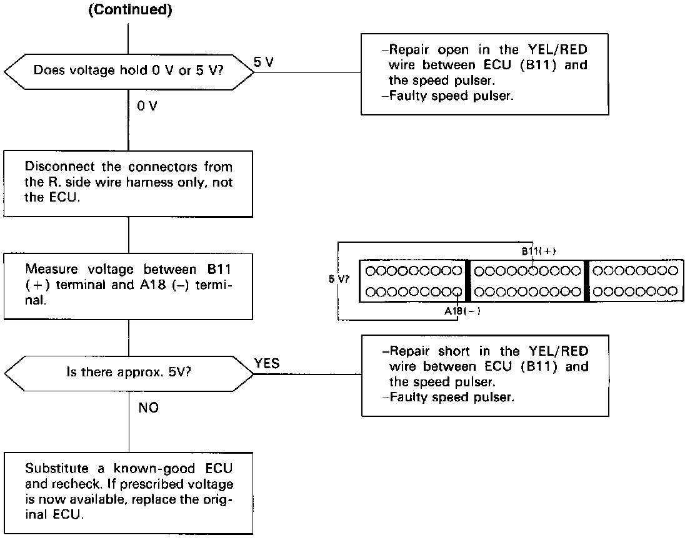

DTC 17
COUPE ONLY

Self-diagnosis Red LED indicator blinks seventeen times: A problem in the Vehicle Speed Pulser circuit.
The signal generated by the speed pulser, which produces 4 pulses (switch closures to ground) for such revolution of the speedometer cable.